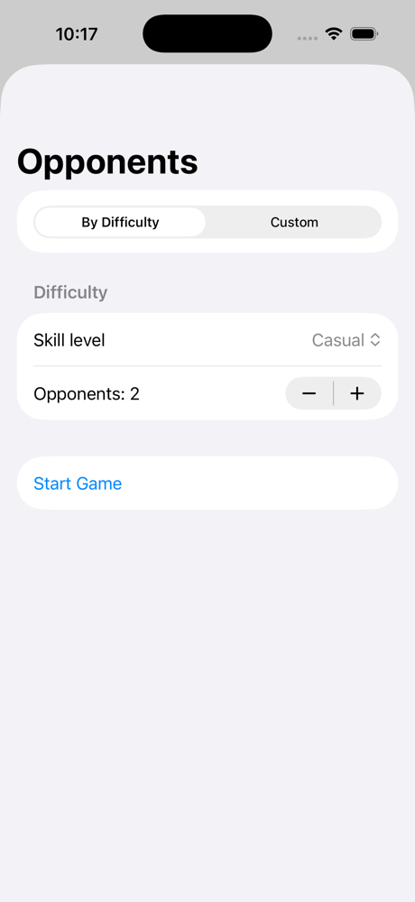
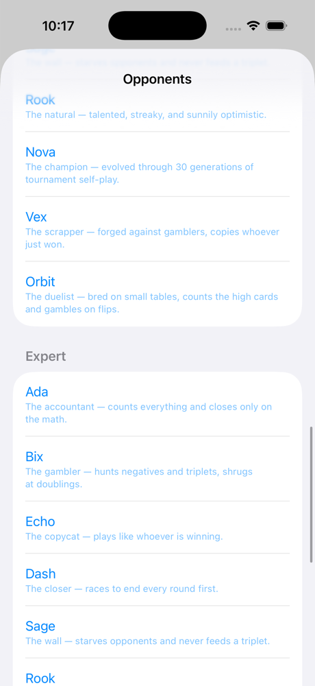
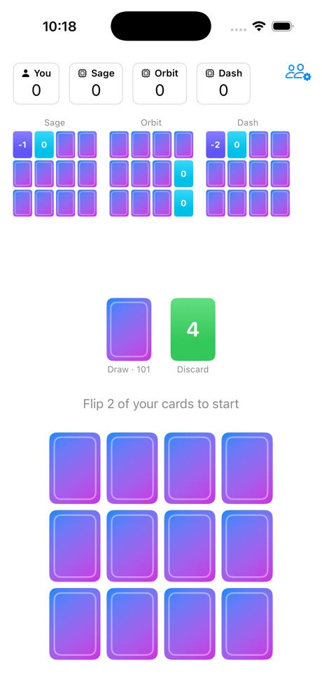
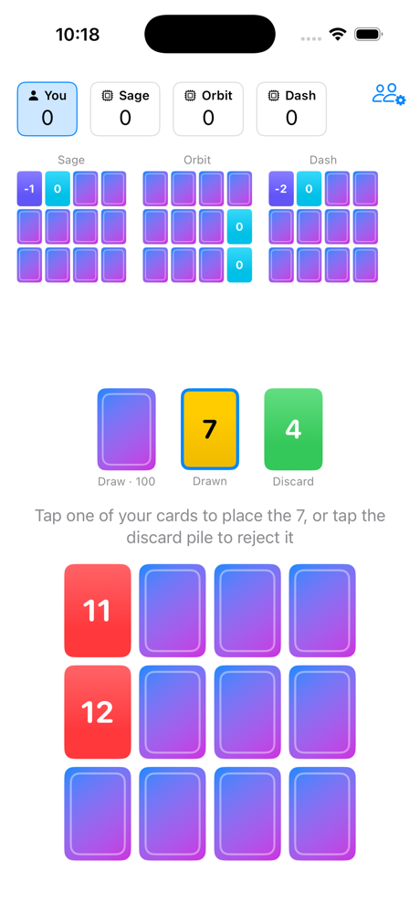
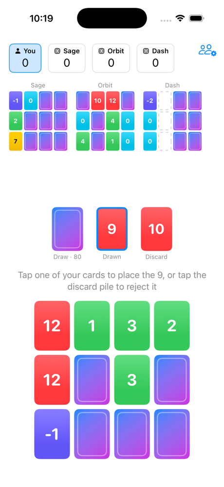
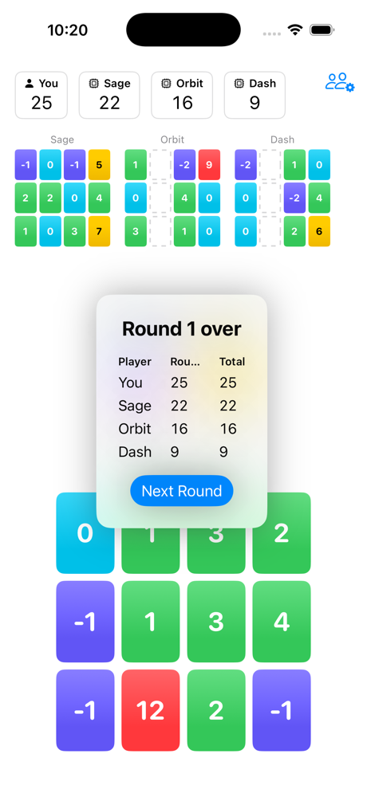

Prepared for Magilano · Douglas Sjoquist, Ivy Gulch LLC
To be sure I wasn't writing to you about something I only imagined I could build, I built a working version of the game first. It plays the rules correctly, and the computer opponents play a genuinely competitive game — that part took real work, and I'm pleased with how well it plays.
The prototype is deliberately plain: none of SKYJO's artwork or colors, generic cards, simple screens. It is a private technical proof, nothing more, and it stays that way unless you say otherwise.
A full game against three computer opponents, played start to finish (about two minutes).






SKYJO brings people together without electronics and lets conversation flow naturally between the generations at the table. The long-term goal for a mobile version is to allow that same interaction between family members who cannot be in the same room — beginning with a single-player version that captures the gameplay in an engaging and fun way.